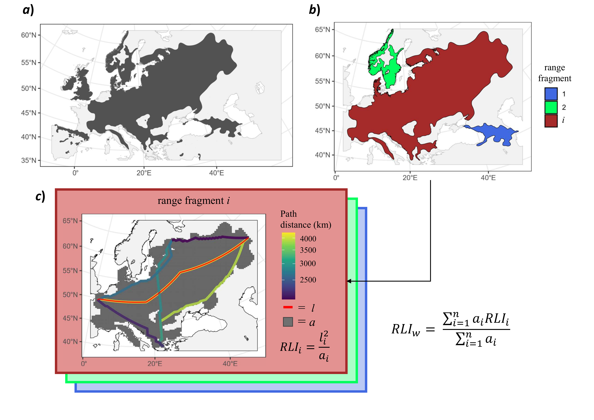
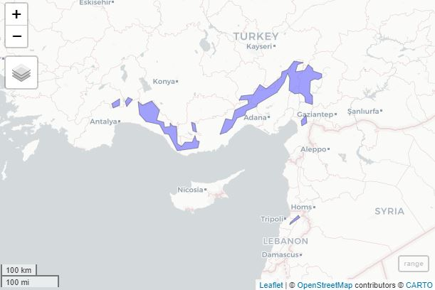
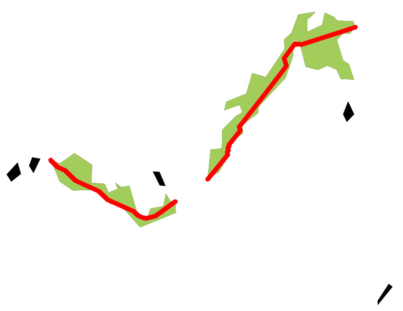
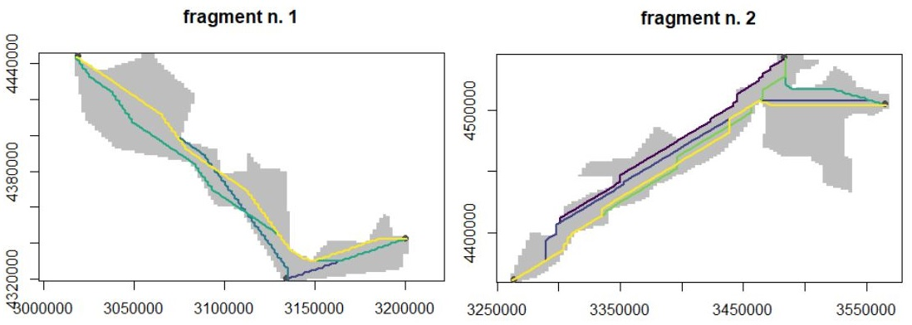
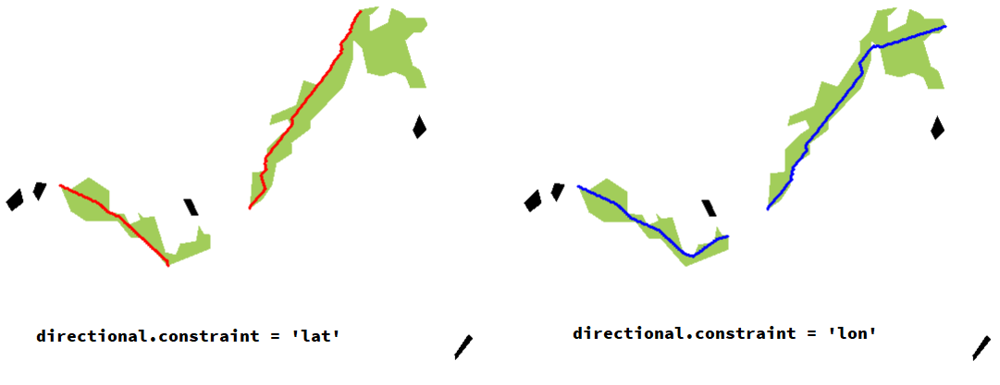
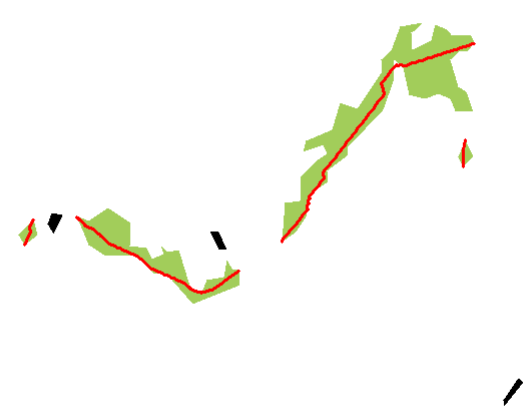

Measuring species range elongation
Species range shape refers to how a species’ distribution differs from a perfectly symmetrical or isotropic pattern expected under neutral range dynamics. Some researchers have indeed proposed estimating shape elongation as a significant biogeographical species attribute (Rapoport, 1982; Brown et al., 1996; Pigot et al., 2010; Baselga et al., 2012; Castro-Insua et al., 2018).
Here I share an R code (= the get_RLI function) to calculate a metric similar to what described as the Range Linearity Index (RLI) by Pigot et al. (2010). The RLI is a dimensionless measure calculated as RLI = l2 / a, where l represents the maximum linear dimension, and a represents the area of the polygon. To compute the l metric, we will determine the longest length among the shortest paths connecting all possible combinations of the westernmost, easternmost, northernmost, and southernmost geographical points at the extremes of each polygon. As a result, the RLI offers an intuitive way to quantify shape elongation, analogous to the long axis to width ratio (Graves 1988; Pigot et al. 2010). For example, an RLI value of 2 indicates a shape that is twice as long as it is wide.
I used this function to study the relationships between range attributes and functional traits of European trees. For additional details, please refer to the tutorial below and to my publication available online: Midolo (2024) in Global Ecology and Biogeography. You can also download the get_RLI function here.

get_RLI function. The figure illustrates a schematic example for the native range of the wych elm (Ulmus glabra) (data source: Caudullo et al. 2017). Panel a) display the whole range of the species. Panel b) shows the largest range portions (= fragments) selected for RLI calculation (the biggest range fragments are used by default based on the rationale these are more important in defyining the whole range shape). RLI for species w is calculated as the average of RLI values of each range fragment (RLIi). RLI is the dimensioness ratio between squared length (l2) and area of the polygon, where l is the longest path across the shortest distance between the geographical points located at the extremes of each polygon (line in red; panel c). Maps are displayed with UTM EPSG:32633 projection.Here is the code for the get_RLI function:
get_RLI <- function(range, # a multi polygons sf object of the species range
directional.constraint='none', # constraint the shortest path? default is none, use 'lon' or 'lat' to constrain the paths along longitude or latitude
fragment.inclusivity = 0.1, # the lowest this value, the highest is the proportion of fragments considered for range calculation. Lowest fragments
columns.and.rows=100, # number of col and rows of the raster for each range fragment, increasing this number makes a raster with finer resolution, increasing considerably the amount of time!
direction = 8, # the 'directions' argument of the gdistance::transition() function. Values of 4, 8 and 16 are reccomended
graphical = T, # if T, plot the range with line objects (paths) used for RLI estimation
col.bl='red', # if graphical == T, the color of the final paths used for RLI estimation in the graph
very.graphical = F) # plot each fragment under examination and its candidate paths
{
st=Sys.time()
UTM32 = '+proj=utm +zone=32 +datum=WGS84 +units=m +no_defs'
orirange <- st_sf(range) # trasform to sf object
st_geometry(orirange) <- 'geometry'
orirange <- st_transform(orirange, UTM32) #reproject to UTM zone 32
rprp <- orirange %>% st_cast('POLYGON') # cast to POLYGON (= separating fragments)
rprp$area <- as.numeric(st_area(rprp$geometry)) # calculate area for each fragment in m^2
rprp = rprp %>% arrange(desc(area))
rprp$adif <- rprp$area/max(rprp$area) # proportional area difference with the nmain range
#exclude too small fragments:
rprpo = rprp
rprp = rprp[rprp$adif>=fragment.inclusivity,]
rprp$id = 1:nrow(rprp)
print(paste0('Assessing ',nrow(rprp),' range fragments out of ', nrow(rprpo)))
sentieri <- list() #list where to store fragments' RLI stats
for (frag in 1:nrow(rprp)) {
st.i <- Sys.time()
polyi <- rprp[frag,]
#apply Behrman transofmration, lon_0 set depending upon longitudinal extension (correcting for distortion)
polyi = st_transform(polyi, crs = '+proj=cea +lon_0=0 +lat_ts=30 +x_0=0 +y_0=0 +datum=WGS84 +ellps=WGS84 +units=m +no_defs')
if(round(abs(min(st_coordinates(polyi)[,1]))) == round(abs(max(st_coordinates(polyi)[,1])))){
polyi = st_transform(rprp[frag,], crs = '+proj=cea +lon_0=10 +lat_ts=30 +x_0=0 +y_0=0 +datum=WGS84 +ellps=WGS84 +units=m +no_defs')
}
crs.polyi <- crs(as_Spatial(polyi))
poly.grid <- st_make_grid(polyi, n=rep(columns.and.rows,2)) %>%
st_sf() %>%
mutate(row.id = row_number())
defaultW <- getOption("warn")
#1. define the area where the line can pass through (= 'playground')
options(warn = -1)
playground <- poly.grid %>%
left_join(
as.data.frame(st_intersects(poly.grid,polyi))%>%rename(value = col.id),'row.id'
) %>% dplyr::select(-row.id) %>%
st_cast('POINT') %>%
as_Spatial() %>%
as.data.frame() %>%
setNames(c('z','x','y')) %>%
dplyr::select(x,y,z) %>%
rasterFromXYZ(crs = crs.polyi)
options(warn = defaultW)
#plot:
if(very.graphical) {plot(playground, col='grey',main=paste0('fragment n. ',frag),legend=F)}
#2. define the start/arrival point cells (= 'rallypoints')
coord <- st_coordinates(polyi) %>% as.data.frame()
options(warn = -1)
rallypoints <- list(
southernmost = coord[which.min(coord[, "Y"]), ],
northernmost = coord[which.max(coord[, "Y"]), ],
easternmost = coord[which.max(coord[, "X"]), ],
westernmost = coord[which.min(coord[, "X"]), ]
) %>%
bind_rows(.id='flag') %>%
st_as_sf(coords=c("X","Y"), crs = st_crs(polyi)) %>%
dplyr::select(flag,geometry)
raster.cooord <- poly.grid %>%
left_join(
as.data.frame(st_intersects(poly.grid,rallypoints))%>%rename(value = col.id),'row.id'
) %>%
filter(!is.na(value)) %>%
dplyr::select(-row.id) %>%
st_centroid() %>%
st_coordinates %>%
as.data.frame()
rallyrasters <- list(
southernmost = raster.cooord[which.min(raster.cooord[, "Y"]), ],
northernmost = raster.cooord[which.max(raster.cooord[, "Y"]), ],
easternmost = raster.cooord[which.max(raster.cooord[, "X"]), ],
westernmost = raster.cooord[which.min(raster.cooord[, "X"]), ]
) %>%
bind_rows(.id='flag')
options(warn = defaultW)
if(directional.constraint == 'lon') {
rallyrasters <- rallyrasters %>% filter(flag == 'easternmost' | flag == 'westernmost')
}
if(directional.constraint == 'lat') {
rallyrasters <- rallyrasters %>% filter(flag == 'southernmost' | flag == 'northernmost')
}
rallyrasters_spatial <- rallyrasters %>% st_as_sf(coords = c('X','Y'), crs=crs.polyi)
#3. force misplaced points towards raster, if needed
check.allocation <- raster::extract(playground,rallyrasters_spatial)
if (any(is.na(check.allocation))){
badpoints <- rallyrasters[is.na(check.allocation),] %>% st_as_sf(coords=c('X','Y'))
for (k in 1:nrow(badpoints)) {
vvo <- rasterToPoints(playground) %>% as.data.frame() %>% filter(!is.na(z))
vv <- st_as_sf(vvo,coords=c('x','y'))
vv$dist <- st_distance(vv$geometry, badpoints[k,]$geometry)
new.alloc <- vvo[which(vv$dist == min(vv$dist)),] %>% sample_n(1)
rallyrasters[is.na(check.allocation),][,2:3][k,]$X = new.alloc$x
rallyrasters[is.na(check.allocation),][,2:3][k,]$Y = new.alloc$y
}}
rallyrasters_spatial <- rallyrasters %>% st_as_sf(coords = c('X','Y'), crs=crs.polyi)
if(very.graphical) {
rallyrasters_spatial$flagcol = c(rep('grey30',4))[1:nrow(rallyrasters)]
plot(rallyrasters_spatial, col=rallyrasters_spatial$flagcol,add=T,legend=F, pch=16)
}
thepoints2test <- rallyrasters[,-1]
thepoints2test$id <- 1:nrow(thepoints2test)
egrid_unique.combs <- as.data.frame(t(combn(thepoints2test$id,2))) %>%
bind_rows(data.frame(V1=thepoints2test$id,V2=thepoints2test$id)) %>%
setNames(c('n1','n2')) #a non-redundant version of expand_grid
egrid <- cbind(
expand_grid(n1=thepoints2test$id, n2=thepoints2test$id),
expand_grid(d1=cbind(thepoints2test$X,thepoints2test$Y), d2=cbind(thepoints2test$X,thepoints2test$Y))
) %>%
semi_join(egrid_unique.combs, by=c('n1','n2'))%>% #a non-redundant tibble of pairwise combinations
filter(n1!=n2)
egrid <- egrid[,-c(1,2)]
tr1 <- gdistance::transition(playground, transitionFunction=mean, directions=direction)
tr1 <- gdistance::geoCorrection(tr1,'c')
#start detecting the possible paths...
if(very.graphical) {vcol <- viridis::viridis(nrow(egrid),direction = 1)}
linee <- list()
lunghezze <- vector()
for (l in 1:nrow(egrid)) {
linee[[l]] <- gdistance::shortestPath(tr1,
as.numeric(egrid[l,1]),
as.numeric(egrid[l,2]),
output="SpatialLines") %>%
st_as_sf() %>%
st_set_crs(tr1@srs) %>%
st_transform(st_crs(orirange))
if(very.graphical){plot(linee[[l]] %>% st_transform(crs(playground)), add=T, col=vcol[l],lwd=2, lty=1)}
lunghezze[l] <- as.numeric(st_length(linee[[l]]))
}
I.stat <- max(lunghezze)
a <- polyi$area
which.best.line <- c(which(lunghezze == I.stat))
bl.id <- ifelse(length(which.best.line) == 1, which.best.line, sample(which.best.line,1))
bl <- linee[[bl.id]]
sentieri[[frag]] <- list(
best.path = bl,
df = data.frame(fragment=frag, I=I.stat, A=a, RLI = as.numeric(I.stat)^2/a)
)
cati = str_pad(frag,nchar(nrow(rprp)),side='left',pad='0')
et.i = Sys.time() - st.i
message('Fragment ',cati,' time: ',paste(round(et.i,2)),' ',attr(et.i,'units'))
}
out = list(
RLI.vals = bind_rows(purrr::map(sentieri, function(x){x$df})),
RLI.lins = bind_rows(purrr::map(sentieri, function(x){st_sf(x$best.path)}))
)
if(graphical){
plot(as_Spatial(orirange), col='black', border=NA)
plot(as_Spatial(rprp),col='darkolivegreen3',add=T,border=NA)
plot(out$RLI.lins, col=col.bl, add=T, lwd=3)
}
et=Sys.time()-st
message(paste0('... DONE! Total elapsed time: ',paste(round(et,2)),' ',attr(et,'units')))
return(out)
}Here is a simple tutorial. In this example, we calculate RLI for Taurus fir (Abies cilicica), a tree species growing in Lebanon and Turkey. The original native range was downloaded here (source: Caudullo et al. 2017).
#1. prepare the data
#the function depends upon the following R packages:
library(tidyverse); library(sf); library(raster); library(gdistance)
#define coordinates of the simplifed range of Taurus fir
coords <- "MULTIPOLYGON (((30.70949 37.44737, 30.47034 37.32006, 30.52049 37.20553, 30.71815 37.2789, 30.70949 37.44737)), ((31.11012 37.42078, 30.97528 37.4679, 30.88733 37.36318, 30.93263 37.24811, 31.11012 37.42078)), ((36.46468 37.03979, 36.31841 36.89317, 36.33939 36.7773, 36.49918 36.8471, 36.46468 37.03979)), ((36.6707 37.29474, 36.66847 37.51403, 36.59149 37.58607, 36.59808 37.87782, 36.73713 37.93399, 36.84522 37.90433, 36.96676 37.9688, 36.96026 38.04769, 36.70301 38.12471, 36.67512 38.18166, 36.54407 38.27753, 36.43666 38.13201, 36.15473 38.10206, 36.21972 38.26696, 36.29701 38.28576, 36.39462 38.32924, 36.09729 38.36283, 35.89325 38.15608, 35.73671 38.09842, 35.69503 37.97337, 35.24333 37.68169, 35.04145 37.78691, 34.84408 37.54285, 34.47599 37.51281, 34.39836 37.40821, 34.6797 37.42135, 34.68839 37.31277, 34.55881 37.28519, 34.27545 37.15911, 34.18091 36.91732, 33.99108 36.94332, 33.80763 36.56233, 34.02319 36.61594, 34.19481 36.74509, 34.34339 36.97006, 34.59568 37.03146, 34.63063 37.1486, 34.94324 37.24132, 34.98489 37.32413, 35.56452 37.59327, 35.79142 37.8377, 35.8945 38.05866, 35.97055 37.94501, 35.95044 37.6577, 36.13366 37.56702, 36.30933 37.58298, 36.43974 37.49443, 36.46066 37.35781, 36.6707 37.29474)), ((36.23528 34.52347, 35.98332 34.34524, 35.96573 34.2879, 36.28164 34.46973, 36.23528 34.52347)), ((31.27839 37.37006, 31.34101 37.04838, 31.52389 36.88489, 31.95332 36.8085, 32.09129 36.57597, 32.23787 36.55928, 32.48722 36.16406, 33.13701 36.23291, 33.17804 36.38689, 33.09851 36.40655, 33.05761 36.52104, 32.96027 36.36613, 32.73956 36.37612, 32.63873 36.26141, 32.5014 36.32853, 32.48627 36.75422, 32.34106 36.76603, 32.26759 36.84551, 32.28035 36.75343, 32.11068 36.73524, 32.08518 36.86551, 31.86951 36.9232, 31.95336 37.16447, 31.70671 37.38032, 31.4169 37.29067, 31.27839 37.37006)), ((32.93654 36.86382, 32.99047 36.65178, 33.08621 36.62425, 33.04779 36.8336, 32.93654 36.86382)))"
#coordinates to multipolygon sf object:
range <- st_as_sfc(coords, crs='+proj=longlat +datum=WGS84 +no_defs')
#quickly visualise the geometry in a map (optional, requires mapview):
mapview::mapview(range)
Now, let’s run the get_RLI function, with default options:
#run the function with default options:
res <- get_RLI(range)
[1] "Assessing 2 range fragments out of 7"
Fragment 1 time: 2.82 secs
Fragment 2 time: 3.04 secs
... DONE! Total elapsed time: 5.94 secs 
graphical=FALSE to supress the plotting). By default the function displays the different fragments composing species ranges and the longest paths (in red). These are only calculated and drawn for the range fragments considered in the analysis (in green; unutilized range fragment are displayed in black).Let’s inspect the results:
res$RLI.vals # values of RLI for each fragment, units are in m
fragment I A RLI
1 1 248601.8 5779445898 10.69356
2 2 374410.0 12863135567 10.89803
weighted.mean(res$RLI.vals$RLI, w = res$RLI.vals$A) # obtain RLI, weighted by the size of each fragment
10.83464
res$RLI.lins # LINESTRING geometries (the drawn lines)We calculated the species-level RLI, using the average of the RLI of each fragment weighted by its area A. We conclude that range elongation of Abies cilicica is quite pronounced (RLI = 10.8), meaning it is almost about eleven times long as it is wide.
We can allow the function to return some plot displaying all possible shorthests path considered for each range fragment included in the analysis by setting the parameter very.graphical=TRUE.
# show the intermediate steps of calculation for each path
get_RLI(range, very.graphical = T, graphical = F) 
In some systems, one may want to focus exclusively upon the elongation along either longitude or latitude. For example, given the south-to-north distribution of Andean montane forests, one might be interested in knowing the elongation of a species along latitude (e.g. see Graves 1988). On the other hand, range elongation along longitiude might be a good indicator for e.g. plant species constrained to coastal lines in the Mediterranean. In this context, we can simply force the function to consider only northermost-to-southernmost points with directional.constraint = 'lat' or westernmost-to-easternmost points with directional.constraint = 'lon' (default is directional.constraint = 'none')
#constraint shortest path only latitude or longitude paths
get_RLI(range, directional.constraint = 'lat', col.bl = 'red')
get_RLI(range, directional.constraint = 'lon', col.bl = 'blue')
directional.constraint parameter is modified accordingly (edited figures)Finally, one may also consider more fragments for RLI calculation, as in principle there is no reason to exclude smallest fragments. However, I) range polygons could be much more complex and bigger than what we are using here, resulting into non-negligible computation times for this function, and II) the RLI calculation weighted by area makes nearly useless to consider all possible tiny fragments composing a species range. Anyway, we can modify the fragment.inclusivity parameter to do so (default here is setted to 0.1). This is a threshold value. It allows the inclusion of fragments by calculating the ratio between the area of each fragment to the area of the fragment with the largest area. Only fragments with values greater or equal to fragment.inclusivity are included for RLI calculation. Thus, the lowest this value, the highest is the proportion of fragments considered for range calculation. Set fragment.inclusivity=0 if you want all fragments to be considered for RLI estimation.
#decrease inclusivity treshold for range fragments (i.e., consider an increasing number of smaller fragments for RLI estimation)
res2 <- get_RLI(range, fragment.inclusivity = 0.02) # default is 0.1
> res2$RLI.vals # we now included more fragments
fragment I A RLI
1 1 34405.63 304506996 3.887422
2 2 34215.45 364252009 3.213975
3 3 248601.78 5779445898 10.693559
4 4 374409.97 12863135567 10.898029
> weighted.mean(res2$RLI.vals$RLI, w = res2$RLI.vals$A) #but they matter less in overall RLI calculation
[1] 10.58135You can see we have now two smaller fragments considered for RLI calculation. Yet, these new smaller fragments weight less in the final average, and thus they do not affect the final RLI calculation that much. Again, this follow the assumption that smaller ranges matter less for overall range shape estimation.
References
Baselga, A., Lobo, J. M., Svenning, J. C., & Araújo, M. B. (2012). Global patterns in the shape of species geographical ranges reveal range determinants. Journal of Biogeography, 39(4), 760–771.
Brown, J. H., Stevens, G. C., & Kaufman, D. M. (1996). The Geographic Range: Size, Shape, Boundaries, and Internal Structure. Annual Review of Ecology and Systematics, 27(1), 597–623.
Castro‐Insua, A., Gómez‐Rodríguez, C., Svenning, J. C., & Baselga, A. (2018). A new macroecological pattern: The latitudinal gradient in species range shape. Global Ecology and Biogeography, 27(3), 357-367.
Caudullo, G., Welk, E., & San-Miguel-Ayanz, J. (2017). Chorological maps for the main European woody species. Data in Brief, 12, 662–666.
Graves, G. R. (1988). Linearity of Geographic Range and Its Possible Effect on the Population Structure of Andean Birds. The Auk, 105(1), 47–52.
Midolo, G. (2024). Plant functional traits couple with range size and shape in European trees. Global Ecology and Biogeography, 33(6), e13838.
Pigot, A. L., Owens, I. P. F., & Orme, C. D. L. (2010). The environmental limits to geographic range expansion in birds. Ecology Letters, 13(6), 705–715.
Rapoport, E. H. (1982). Aerography: Geographical Strategies of Species. Pergamon Press, Oxford UK.